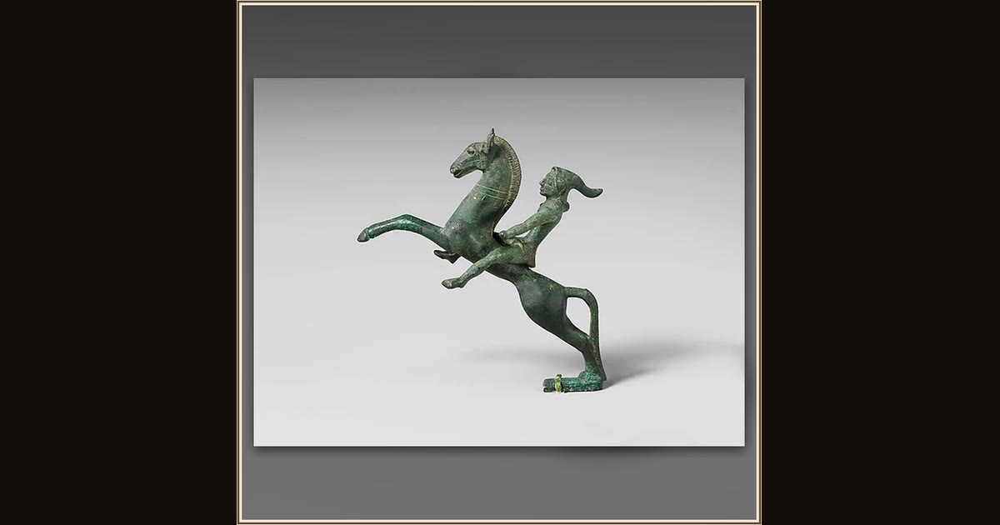

Bronze statuette of a Scythian mounted archer
Unknown · early 5th century BCE · The Metropolitan Museum of Art · New York, USA
None of the suitors can bend the great bow, and young Telemachus nearly strings it himself before Odysseus signals him to stop. When Odysseus takes it up at last, the whole hall falls silent — this little bronze archer, bow in hand, shows the deadly skill the